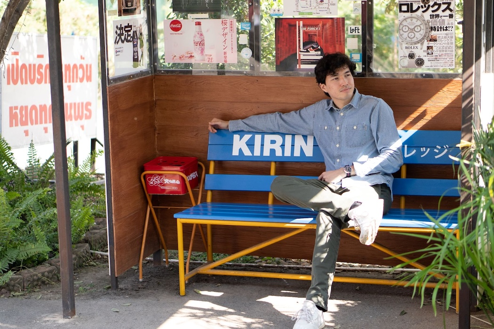

Hello!
I'm a product-minded designer who ships products and drives measurable business outcomes.
Turning user insights into growth-driving product strategy.
Companies I've worked at


Case Studies
| Name | Description | Category | Price | Image |
|---|

Ready to scale your product impact?
I help scale-ups and growing companies optimize user acquisition, improve conversion flows, and build experimentation culture. Currently transitioning from UX to Product Management while available for strategic consulting.
Experience
Redesigned high-traffic business acquisition flows, improving conversion and NPS through data-driven iterations.
- Drove UX experimentation culture by designing 50+ data-driven tests that scaled A/B testing volume by 150%, transforming PostNL's approach from evidence-based to evidence-driven design
- Achieved 15%+ increase in account creations by simplifying user flows (reduced from 37 to 17 clicks) and boosted NPS by 12 points through targeted improvements for high-value user segments
- Led usability research that aligned stakeholders on roadmap priorities, focusing design efforts on highest-impact opportunities
- Streamlined cross-functional collaboration with marketing, brand, and development teams, reducing delivery time from 5 to 2 sprints for new digital assets through standardized design templates that became company benchmarks
Designed enterprise/business focused applications for 10+ teams in Siemens and Mendix, focusing on employee productivity.
- AuditON design lead: Led user research that identified key compliance bottlenecks for security teams. Designed streamlined workflow with automated validation that reduced error rates by 30%, using HEART framework to measure improvements in task success and user satisfaction
- Design System Growth: Created 10+ reusable components, increasing team productivity by 40% and ensuring brand consistency across 20+ apps
- Custom UI implementation: Shipped 10+ tailored applications using HTML/CSS overrides to elevate UX and quantitatively test out design impact
- Produced 100+ video ads for international brands, leading creative experimentation with diverse audio/visual approaches
- Designed high-converting landing pages for personalized customer segments, implementing A/B testing to maximize conversion rates
- Executed 10+ influencer campaigns with 1M+ combined reach for beauty/lifestyle clients
Internships
UX design, thesis internship (Afstudeerstage).
Product packaging and design, contributive internship (Meewerkstage).